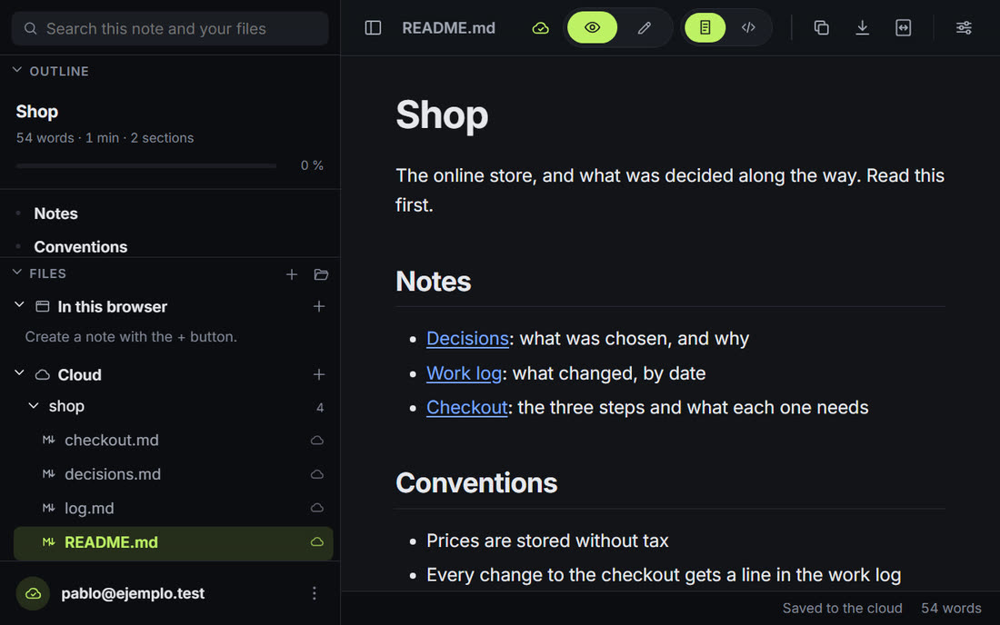
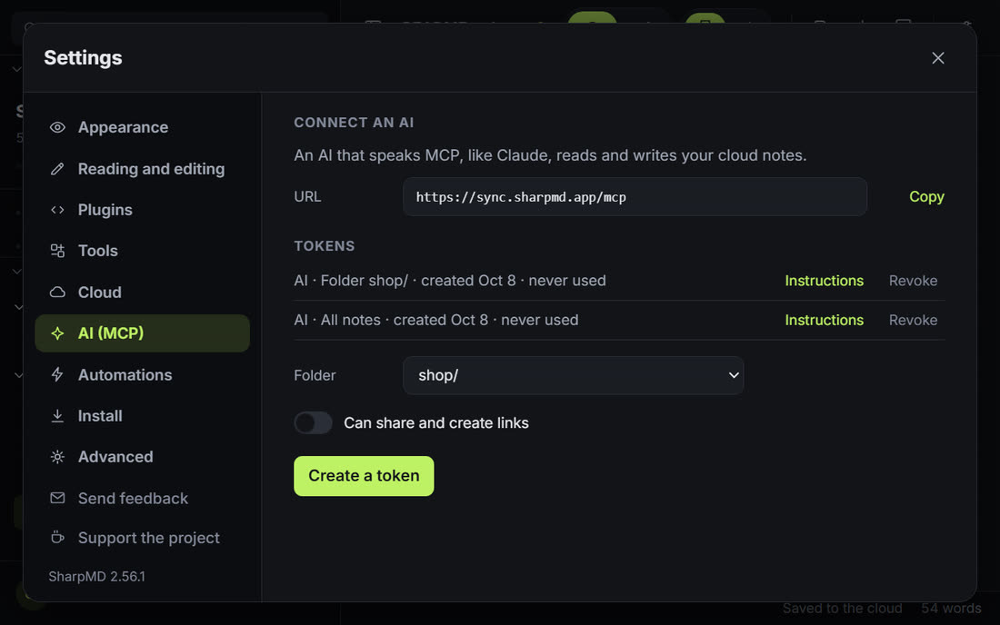

Sin escribir sintaxis
Títulos, tablas, listas de tareas, diagramas y fórmulas se cambian sobre la página ya formateada. El código está a un clic.
Nada que instalar
Abre en el navegador, y las mismas notas están en cada dispositivo donde entrás.
Tu IA tiene el contexto
Por MCP lee las notas del proyecto antes de una tarea y documenta lo que cambió.
Compartido con un enlace
Una nota o una carpeta con otra cuenta, un enlace público, o una sesión en vivo donde todos escriben a la vez.
Conectado a tus herramientas
API, webhooks firmados y direcciones de entrada para Make, n8n, Activepieces, Zapier y Slack.
Tus archivos siguen siendo tuyos
Un
.mdde tu disco abre sin subirse. Código abierto, con un servidor que podés levantar vos.
Editás el documento que estás leyendo.
Hacés clic en un párrafo, un título, un ítem o una celda y escribís. El Markdown se reescribe por detrás, bloque por bloque.
Escribís **negrita** o `código` y los signos se vuelven formato. Si la línea empieza con #, - o >, pasa a ser título, lista o cita.
Clic derecho sobre un bloque.
Insertás debajo una tabla, un bloque de código, un diagrama, una fórmula o un aviso. Lo convertís en título, lo movés, lo duplicás o lo eliminás.
/ en una línea vacía abre el mismo menú. Ctrl Z lo deshace y Ctrl Y lo rehace.
Diagramas con el dibujo al lado del código.
Hacés clic en un diagrama Mermaid o Graphviz y se abre con la vista previa en vivo. Arrancás de una plantilla, sumás pasos y flechas con un botón y elegís una paleta de colores.
Un error se explica en palabras simples, con su línea marcada. Las fórmulas tienen un editor del mismo tipo.
La carpeta entera, con búsqueda.
Abrís una carpeta de tu disco y la barra lateral muestra sus archivos, con cuántas notas tiene cada carpeta. El buscador revisa el texto de todos a la vez.
Desde ahí creás, renombrás y eliminás, y movés archivos y carpetas arrastrándolos.
Tu IA sobre las mismas notas
SharpMD no trae una IA propia. Hay dos formas de usar la tuya.
Tu agente, conectado por MCP
Claude, Codex o cualquier otro cliente MCP lee y escribe las notas que tenés en la nube, desde donde trabaja. Llega hasta donde llega el token que le das.
Un asistente dentro de la nota, con tu propia clave
Prendés la herramienta y cargás tu clave de Claude, OpenAI, Gemini y ocho más, o un servidor compatible. Reescribe una selección, escribe donde está el cursor y responde sobre la nota abierta. Cada resultado es una propuesta que aceptás o descartás.
Creás un token en Ajustes y copiás las instrucciones. Pegadas en tu IA, llevan la dirección, el token y cómo escribir acá.
You are being connected to SharpMD, a Markdown notes app. ## Connect - URL: https://sync.sharpmd.app/mcp - Header: Authorization: Bearer mdt_... ## What to use it for - Keep a record of your work as you go: what changed, progress, decisions and why, open questions. ## Use it as project memory - Before you start a task, call search_notes and read the notes of the project.
# list_notes read_note write_note append_note move_note # search_notes note_history list_comments resolve_commentEsas instrucciones le piden leer las notas del proyecto antes de una tarea y actualizarlas cuando cambia algo. La próxima sesión arranca desde ahí, sea la IA que sea.

Dejás un comentario sobre un párrafo. Tu IA lee los abiertos, hace cada cambio y lo cierra con una respuesta.
Limitás un token a una carpeta y nada de afuera se puede leer ni escribir. Compartir es un permiso aparte, apagado salvo que lo prendas.

Conectalo a tus herramientas
Las notas que escriben tu IA y tu equipo pueden disparar un flujo en Make, n8n, Activepieces, Zapier o Slack, o recibir de uno.
SharpMD llama a una dirección cuando cambia una nota o una tarjeta, de toda la cuenta, de una carpeta o de una sola nota. Pegás una dirección de Slack o de Discord y al canal le llega un renglón legible.
tienda/tablero.mdPor hacerArreglar el pagoCorreo de bienvenidaHechoArreglar el pago# lanzamientoSharpMDTarjeta "Arreglar el pago" pasó de Por hacer a Hecho en tienda/tablero.md
Cada tarjeta lleva sus campos, como vencimiento, responsable y prioridad. Al pasarla de columna sale
card.moved, y al terminarla,card.done.TarjetaArreglar el pago- vence
- 2026-10-20
- responsable
- Ana Paz
- prioridad
- alta
- estado
- Por hacer → Hecho
POST /tu/direccion"type": "card.moved", "card": { "title": "Arreglar el pago", "attrs": { "vence": "2026-10-20", "responsable": "Ana Paz" } }, "from": "Por hacer", "to": "Hecho"Una dirección secreta que agrega un renglón a una nota, crea una nota o crea una tarjeta. Un formulario u otro sistema le manda los datos.
Formulario de pedidoEnviartienda/pedidos.md- 2026-10-06 Pedido nuevo de Marta, $ 85
- 2026-10-07 Pedido nuevo de Ana, $ 120
Notas, carpetas, búsqueda, historial, comentarios y tableros en JSON, con los mismos tokens que MCP. Incluye OpenAPI 3.1.
$ curl -X POST \ https://sync.sharpmd.app/api/v1/boards/cards/c8k2m9xq/move \ -H "Authorization: Bearer mdt_..." \ -H "Content-Type: application/json" \ -d '{"path": "shop/board.md", "column": "Done"}'{"ok": true, "data": { ... }}$ curl "https://sync.sharpmd.app/api/v1/search?q=checkout" \ -H "Authorization: Bearer mdt_..."
Qué puede leer el servidor y qué no
Los archivos de tu disco
Se leen en tu navegador y no se suben. No hace falta cuenta.
Las notas de la nube
Se guardan cifradas. El servidor tiene esa llave, porque tiene que compartirlas y dárselas a tu IA.
Las carpetas con contraseña
Cifradas de extremo a extremo: el servidor guarda texto que no puede leer. Tu IA entra solo mientras desbloqueás la carpeta, por el tiempo que elijas.
Tu clave de IA queda en tu dispositivo
Se guarda cifrada solo en ese dispositivo, con una llave que el navegador no deja exportar. Nunca pasa por nuestro servidor, no se sincroniza y no se vuelve a mostrar entera. Las llamadas van de tu navegador directo al proveedor que elegiste, que recibe lo que le mandás. El texto de una carpeta protegida se manda solo si lo confirmás.
El detalle está en Privacidad, y el código en GitHub: la app con licencia MIT, el servidor con AGPL.
El editor también trae
Escribir
- FórmulasUn editor con vista previa en vivo y botones para fracciones, sumatorias y símbolos.
- Tablas con totalesFilas y columnas con un botón, y una fila que suma cada columna.
- TablerosUna lista de tareas pasa a ser columnas con tarjetas que arrastrás.
- Plantillas26 puntos de partida: notas de reunión, plan de proyecto, hoja de ruta, presupuesto.
- EmojisEscribís
:y elegís de la lista. - Modo focoAtenúa todo menos el bloque que estás escribiendo. El modo máquina de escribir deja el renglón a media altura.
Encontrar y enlazar
- Buscar y reemplazarDe a una coincidencia o todas.
- Enlaces entre notas
[[nombre]]enlaza al archivo con ese nombre, y Ctrl K elige una sección o un archivo de una lista. - Archivos soltados en la notaArrastrás un archivo de la barra lateral a la nota que estás editando y queda como enlace.
- ImágenesPegadas o soltadas, se guardan en
assets/, al lado del documento. - No solo MarkdownCódigo resaltado, CSV como tabla, imágenes como imágenes.
- ExportarUn solo archivo HTML, PDF desde imprimir, o Word.
- Publicar un sitioUna carpeta de la nube se convierte en un sitio web público, con menú, buscador y tema. Un clic para actualizarlo.
En cualquier lado
- En el celularLa misma app en pantalla chica, con los archivos en un panel lateral.
- Sin conexiónLa app web abre sin conexión una vez que la usaste.
- Notas rápidasNuevo abre una nota vacía, guardada en el navegador o en la carpeta que elegiste.
- Leer en voz alta y dictadoEscuchás una nota, o escribís hablando, con fórmulas y diagramas por voz.
- Diapositivas, nota diaria y mapa de enlacesPresentás una nota a pantalla completa, abrís la nota de hoy con un botón y ves qué notas se enlazan entre sí.
- Galería de la comunidadPlantillas, temas y paletas de diagramas que comparte la gente, revisadas antes de publicarse.
- Inglés y españolSe cambia en Ajustes.
Hacela tuya
Doce temas incluidos, seis claros y seis oscuros, en todos los planes. El color de acento y la tipografía también son gratis.
Planes
Lo que hacés solo y en tu dispositivo es gratis. Se paga lo que corre en nuestro servidor para conectarte con otras personas o con tu IA.
Gratis
USD 0
Sin cuenta obligatoria
Empezar a escribir- En tu dispositivo
- Todo el editor
- Archivos y notas del navegadorSin límite
- Dictado, diapositivas, nota diaria y exportar a Word
- El asistente de IA con tu propia clave
- En nuestro servidor
- Notas en la nube25
- ImágenesPor enlace
- Carpetas protegidas
- Papelera de 30 días
- Compartir y enlaces públicosno incluido
- Sesiones en vivo por enlaceno incluido
- Publicar un sitiono incluido
- La conexión MCP para tu IA
- Comentarios que resuelve tu IA
- API, webhooks y direcciones de entradano incluido
- Historial de versionesno incluido
- Apariencia
- Temas incluidos12
- Color de acento y tipografía
- Tu propio CSSno incluido
- Para el equipo
- Un espacio compartido para las notas del equipono incluido
- Roles: administrador, editor y lectorno incluido
- Ajustes que deciden los administradoresno incluido
- El espacio protegido con una contraseñano incluido
- Registro de actividad del espaciono incluido
- Tokens del equipo para una IA o un serviciono incluido
Pago
USD 4 por mes
o USD 40 por año
Pasar al plan pagoEntrás a tu cuenta y pagás dentro de la app.
- En tu dispositivo
- Todo el editor
- Archivos y notas del navegadorSin límite
- Dictado, diapositivas, nota diaria y exportar a Word
- El asistente de IA con tu propia clave
- En nuestro servidor
- Notas en la nubeSin límite
- Imágenes1 GB
- Carpetas protegidas
- Papelera de 30 días
- Compartir y enlaces públicos
- Sesiones en vivo por enlace
- Publicar un sitio1 sitio
- La conexión MCP para tu IA
- Comentarios que resuelve tu IA
- API, webhooks y direcciones de entrada
- Historial de versiones30 días
- Apariencia
- Temas incluidos12
- Color de acento y tipografía
- Tu propio CSS
- Para el equipo
- Un espacio compartido para las notas del equipono incluido
- Roles: administrador, editor y lectorno incluido
- Ajustes que deciden los administradoresno incluido
- El espacio protegido con una contraseñano incluido
- Registro de actividad del espaciono incluido
- Tokens del equipo para una IA o un serviciono incluido
Equipo
USD 5 por persona por mes
Desde 2 personas
Armar un equipoGratis por 14 días
- En tu dispositivo
- Todo el editor
- Archivos y notas del navegadorSin límite
- Dictado, diapositivas, nota diaria y exportar a Word
- El asistente de IA con tu propia clave
- En nuestro servidor
- Notas en la nubeSin límite
- Imágenes2 GB por persona
- Carpetas protegidas
- Papelera de 30 días
- Compartir y enlaces públicos
- Sesiones en vivo por enlace
- Publicar un sitio1 + el del equipo
- La conexión MCP para tu IA
- Comentarios que resuelve tu IA
- API, webhooks y direcciones de entrada
- Historial de versionesHasta 1 año
- Apariencia
- Temas incluidos12
- Color de acento y tipografía
- Tu propio CSS
- Para el equipo
- Un espacio compartido para las notas del equipo
- Roles: administrador, editor y lector
- Ajustes que deciden los administradores
- El espacio protegido con una contraseña
- Registro de actividad del espacio
- Tokens del equipo para una IA o un servicio
Dónde corre
Cuatro piezas, todas de código abierto.
La app web
Nada que instalar. Chrome, Edge y Brave abren carpetas y guardan en el lugar. Firefox y Safari abren de a un archivo y al guardar descargan una copia.
Abrir la appLa extensión
Funciona sin conexión. Ponés Chrome como programa por defecto para los .md y con doble clic se abren ya formateados.
En el celular
La app web entra en pantalla chica y se instala desde el navegador. La app de Android es esa misma app empaquetada, con las mismas notas y la misma cuenta.
Abrirla en el celularEl servidor de sincronización
Sobre esto corren las notas en la nube, la conexión con la IA y las automatizaciones: un archivo de Node con SQLite, con licencia AGPL.
Código del servidor- GitHubCódigo fuente
- Chrome Web StoreExtensión de Chrome
- Google PlayEn prueba
En sharpmd.app ya está andando
Nosotros mantenemos las cuentas, el correo de ingreso, los respaldos, las actualizaciones y la conexión MCP con HTTPS. Vos entrás y pegás un mensaje en tu IA.
En tu servidor es el mismo código
Configurás el dominio con HTTPS, un servicio de correo para los códigos de ingreso, la llave de cifrado, los respaldos y cada actualización, y después cargás su dirección en Ajustes. Los pasos están en el README del servidor.
Con la extensión instalada, la app web y la extensión muestran las mismas notas y los mismos recientes. Si instalás la app web, Windows la ofrece en Abrir con para los .md.
Preguntas
¿Otra cosa? Escribí a hello@sharpmd.app.
¿Qué es gratis y qué se paga?
El editor es gratis y de código abierto, sin límite de archivos ni de notas guardadas en el navegador. El plan gratis suma 25 notas en la nube, la conexión MCP para tu IA sobre esas notas y los doce temas, con el color de acento y la tipografía que elijas. El plan pago, USD 4 por mes o USD 40 por año, cubre el resto de lo que corre en nuestro servidor: notas en la nube sin límite, subir imágenes, compartir, sesiones en vivo, un sitio publicado, la API y los webhooks, y el historial de versiones. El CSS propio también es del plan pago.
¿SharpMD trae una IA propia?
No. Usás la tuya, de una de dos formas: conectás por MCP el agente que ya usás (Claude, Codex u otro cliente), o prendés el asistente dentro de la nota con tu propia clave de Claude, OpenAI, Gemini y ocho más, o un servidor compatible.
¿SharpMD ve mi clave de IA o lo que le mando?
No. La clave se guarda cifrada en tu dispositivo y los pedidos van de tu navegador directo al proveedor que elegiste. Ese proveedor recibe el texto que le mandás y lo trata según sus propios términos.
¿Cómo llega mi IA a mis notas?
Creás un token en la app y agregás SharpMD como servidor MCP en Claude u otro cliente. Solo ve las notas que tenés en la nube, o una sola carpeta si limitás el token.
¿En qué se diferencia de un editor local con complementos?
Un editor local guarda las notas en una sola máquina. Para compartirlas o llegar a ellas desde una IA sumás complementos y un servicio de sincronización, y cada persona repite la instalación. SharpMD abre en el navegador con el compartir, la conexión MCP y la API ya andando. Un archivo de tu disco igual abre sin subirse.
¿El servidor puede leer mis notas?
Las notas de la nube se guardan cifradas en el servidor, que tiene la llave para poder compartirlas y dárselas a tu IA. Una carpeta que protegés con contraseña es distinta: se cifra en tu navegador y nadie más puede leerla. Para dejar entrar a tu IA, desbloqueás esa carpeta por un tiempo. Si perdés la contraseña y la clave de respaldo, esas notas no se pueden recuperar.
¿Pueden editar varios una nota a la vez?
Abrís una sesión en vivo sobre una nota de la nube y mandás el enlace. Escriben hasta 12 personas a la vez. La terminás cuando querés, o armás un enlace nuevo para dejar afuera al anterior.
¿Qué pasa con una nota de la nube que elimino?
Queda 30 días en la papelera y la podés restaurar. Mientras está ahí no aparece en las búsquedas, no se comparte y tu IA no llega a ella.
¿Funciona sin conexión?
Sí. La extensión siempre, y la app web una vez que la abriste. Las notas de la nube que ya abriste también están, y lo que escribís se sube cuando vuelve.
¿Qué Markdown soporta?
GitHub Flavored Markdown, más matemática con KaTeX, diagramas Mermaid y Graphviz, notas al pie, listas de tareas, avisos, listas de definición y cabecera YAML.
¿Cómo abro un .md con doble clic?
Instalás la extensión, activás "Permitir acceso a URLs de archivo" en sus detalles, y ponés Chrome como programa por defecto para los .md.
Abrí una nota y hacé clic en un párrafo.
El editor no pide cuenta. La nube, la conexión para tu IA y las automatizaciones empiezan cuando entrás.